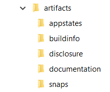

Liability The information in this guideline is intended for product description purposes only and shall not be deemed to be of a warranty nature, unless expressly stipulated by contract. All rights are reserved with respect to the content of this documentation and the availability of the product.
Table of Contents¶
4 Basic App Information (mandatory)
5 Further App Information (conditional)
6 Working Set Overview (mandatory)
7 ctrlX Basic Mechanisms (mandatory)
8 ctrlX Security System (optional)
9 ctrlX User Interface and Project Handling (optional)
10 ctrlX AUTOMATION System Functions (optional)
11 Real Time Extension (optional)
1 Introduction¶
This guideline provides guidance for app developers and partners who want to contribute to the ctrlX World Ecosystem with new apps.
This is a living document. New apps might lead to new topics and may result in new guidelines at any time.
1.1 App Development for ctrlX AUTOMATION¶
The open ctrlX AUTOMATION system architecture allows developers to implement further system functions with little effort at any time as apps and as open source software. This document provides guidance on how to create apps to integrate them perfectly into ctrlX AUTOMATION.
Bosch Rexroth approves an app as qualified for ctrlX AUTOMATION using a dedicated app validation and signing process. This process ensures that the app meets the ctrlX AUTOMATION quality standards.
This document describes all aspects that have to be considered when an app is developed. Some aspects are mandatory, both from a legal and technical viewpoint. Others are optional and describe how an app can be fully integrated in the ctrlX system architecture to provide the best user experience.
1.2 Obligations for Technical Aspects¶
This document describes the technical aspects for ctrlX apps. These aspects each have one of the following obligations:
- MANDATORY - This aspect is strictly required and must be implemented.
- OPTIONAL This aspect brings added value and can or should be implemented.
- CONDITIONAL - This aspect is to be implemented in specific cases**. Bosch Rexroth and the partner identify the requirements during the app integration process.
1.3 Partner Contract and Legal Framework¶
This development guide describes the technical integration of an app into ctrlX CORE. The following documents of the ctrlX World partner program also need to be available and signed as non-technical prerequisites before an app gets published:
- The Distribution Framework Agreement ("Partner Contract") describes the fundamental conditions of the partnership between you as app developer and Bosch Rexroth and affiliates
- A Individual Contract describes all app related licenses as part of the product to be sold within Bosch Rexroth and affiliates sales channels
- A Letter of Intent (LOI) defines the partnership priciples
- A Non Disclosure Agreement (NDA) is the basis of our collaboration and needed for file exchange
2 App Validation Process¶
As a mandatory step for app integration into ctrlX AUTOMATION, Bosch Rexroth will carry out a standard app validation and signing process.
For handover, Bosch Rexroth accordingly provides a partner folder in the ctrlX World Portal, which will be prepared during the partner contracting process.
2.1 Initial Meeting for App Validation¶
Before the validation process starts, the partner / app developer must provide the app architecture
Hint
A picture of the main communication paths is needed, including
-
a modular overview of the app
-
a short description of the communication paths to other apps/devices
-
the app configuration and data storage concept
-
a description of a typical standard scenario
The architecture overview should be stored as "architecture-overview.x" in the {app-name} folder. Initially, provide the architecture overview, and if there are any changes in the architecture, update and provide the new overview.
This document typically will be provided for an initial meeting with the partner / app developer, the relevant Bosch Rexroth partner manager and the Bosch Rexroth app validation team. At this point, the partner should also already have uploaded the necessary artifacts to be able to clarify any open points.
2.2 Artifacts’ Delivery¶
Bosch Rexroth checks the provided artifacts and the described behavior of an app that is to be signed as an official ctrlX app in an automated validation framework.
This validation framework requires a standard format for artifacts and information.
To simplify the delivery of artifacts, we provide a base folder structure with description and schema files. This helps app developers to deliver the required artifacts and us to simplify the validation work. Please use the given structure, folder names and file names as given below, without any renaming:
General Folder structure¶
- {company-name}\ - Partner company name. Folder name is created by Bosch Rexroth
- {app-name}\ - Technical app name. This app name is unique. A folder will be created by the partner
- {version}\ - The version folder separates the different versions. Format is three numbers separated by dots, e.g. "1.0.2". Each version has to be stored in a separate folder. A folder will be created by the partner
- {artifacts}\ - The required documents as input for the validation process (see 4.1)
Handover of artifacts¶
Once all the required information is available in your local folder, zip the folder using Windows-zip and upload it as "artifacts.zip" to the ctrlX World Partner Portal space in the ".../{company-name}/{app-name}/{version}/" path.
Important
To avoid problems when uploading the artifacts.zip file, please use the Windows-zip feature
2.4 Validation and Signing¶
Validation is typically carried out in several iterations, depending on the result of a particular validation activity.
If all the required information is provided in the ctrlX World Portal, an email to ctrlx.world@boschrexroth.de will trigger a validation loop.
Basically, the workflow will be as follows:
- Partner/app developer: Uploads required artifacts and informs Bosch Rexroth
- Bosch Rexroth checks the artifacts for completeness. If rework is required, the partner will be notified by email with an attached report in the ".../{company-name}/{app-name}/{version}/results" folder
- Once the artifacts are complete, the validation will start. Again, if rework is required, the partner will be notified with an attached report
- Once validation has been successful, Bosch Rexroth will sign the app and inform the partner by email.
3 App Categories¶
Apps can be integrated into ctrlX on different levels. Three categories are defined as guidance for the prerequisites and possibilities on different levels. A category, however, is not a formal boundary, and an app can seamlessly support aspects in the different categories. Also, subsequent versions of an app might support more aspects than an earlier version. In addition, there is no correlation between the category and an app’s business value. However, at least all aspects that are mentioned in Category 1 need to be met, since they are considered mandatory.
The aspects are briefly described in this section The remainder of these documents provides detailed information about all aspects and also refers to additional sources of information, like how-to documents and code samples.
3.1 Category 1 (Basic): Applies to ctrlX basic mechanisms¶
To be approved as an official ctrlX CORE app, an app must support a minimum set of mandatory aspects.
3.1.1 Overview¶
The app itself and corresponding user documentation need to be provided. Legal aspects like FOSS are also required. Working set information is needed to support the test and validation process. During runtime, the app must use the ctrlX CORE onboard licensing mechanism.
3.1.2 Customer User Experience¶
Customers can find the app in the ctrlX App Store. They know how the app is licensed and can use the overall Bosch Rexroth licensing system for ctrlX CORE. They can also be sure that the app contributes to the basic ctrlX CORE security mechanisms.
3.1.3 Technical Prerequisites¶
Note
As mentioned, the aspects listed here are MANDATORY. This means all of them are required for an official ctrlX app.
Basic app information:
-
App artifacts (“Executables” for ctrlX CORE and ctrlX COREvirtual and basic technical information)
-
App documentation / user manual and release notes
-
Additional app properties according to Linux Ubuntu conventions
-
FOSS information
Working set overview:
-
Information about security behavior (Linux slots & plugs, ports, sockets)
-
Information about resource consumption and read/write operations
-
Standard task scheduling overview
-
Test setup description for typical usage scenario
Integration into ctrlX basic mechanisms:
-
Use of ctrlX license handling
-
App signed by Bosch Rexroth
3.2 Category 2 (Advanced): Contributes to ctrlX engineering concepts¶
For good integration into ctrlX from a user's point of view, an app should meet the aspects of Category 2 – even if these aspects are not necessary for app validation.
3.2.1 Overview¶
The app uses the relevant ctrlX system interfaces and supports ctrlX platform features like Identity Management, Data Management and Backup/Restore.
3.2.2 Customer User Experience¶
The app contributes to the ctrlX user interface and system behavior. It integrates into basic user stories for configuration and maintenance of a ctrlX application.
3.2.3 Technical Recommendations¶
Note
As mentioned, the aspects listed here are OPTIONAL. However, they are highly recommended for a good user experience. Also, the category 2 and 3 aspects overlap and not formally separated
Further app information:
-
FOSS sources
-
Semantic versioning scheme
Integration into ctrlX CORE security system:
-
ctrlX CORE reverse proxy
-
ctrlX Key & Certificate Management
-
ctrlX Identity Management
-
Improved network security (no insecure protocols)
Integration into ctrlX user interface and project handling
-
ctrlX CORE navigation pane and landing page
-
ctrlX CORE configuration storage
3.3 Category 3 (Extended): Extends ctrlX AUTOMATION features¶
Finally, an app can integrate in the Automation framework and extend the ctrlX real time system
Note
Real time integration requires additional training and support from Bosch Rexroth to avoid unexpected system behavior and impacts on the ctrlX real-time kernel.
3.3.1 Description¶
The app exposes information in the ctrlX Data Layer for all other apps. It also can extend the real time functions of ctrlX CORE if connected to the real-time task scheduler
3.3.2 Customer User Experience¶
The app extends the ctrlX AUTOMATION system functions, e.g. for Motion and/or PLC
3.3.3 Technical Recommendations¶
Integration into ctrlX AUTOMATION system functions:
-
ctrlX Data Layer
-
ctrlX CORE logbook and diagnostics system
Real-time extension:
- ctrlX CORE Scheduler
4 Basic App Information (MANDATORY) ¶
The basic app information is checked as a prerequisite by Bosch Rexroth, before the validation process starts.
4.1 App Artifacts (MANDATORY)¶
4.1.1 Artifacts Folder Template¶
Please find the sample artifacts in the artifacts.zip, which can be downloaded and extracted locally. This will create the required folder structure for the mandatory artifacts out-of-the-box, with default descriptions and schema files.
Important
Please use the given structure, folder names and file names unchanged. This will support an efficient validation process.

The artifacts are organized in five sub folders:
4.1.2 "Disclosure" folder (MANDATORY)¶
The FOSS source files and license text files are stored in the disclosure folder
-
"fossinfo.json" (MANDATORY) - license texts for all an app’s used open source software. For more information about format and content, refer to the json example and the corresponding json schema in the standard "artifacts.zip" file.
-
"foss-sources.zip" (CONDITIONAL) - In the foss-sources.zip file, the sources of all used open source libraries / packages are zipped without a password.
- "foss-offer.x" (CONDITIONAL) - If the foss-sources.zip file is not provided, a human-readable file with the name "offer.x" is needed. It explains how the user can get the sources.
Either FOSS sources or FOSS offer is required.
4.1.3 "Build Info" folder (MANDATORY)¶
The build info folder stores all build relevant information.
Note: For the {xxx}-description files, a default file (with explanation) and the corresponding schema is provided in the standard artifacts.zip example.
-
"snapcraft.yaml" (MANDATORY) - The snapcraft.yaml file is the main entry point to create a snap through Snapcraft. It contains all the details the snapcraft command needs to build a snap. See also https://snapcraft.io/docs/snapcraft-yaml-reference
-
"package-manifest.json" (MANDATORY) - The package-manifest.json covers essential settings, like the proxy URL
-
"portlist-description.json" (MANDATORY) - All used ports are described in the port list
-
"unixsocket-description.json" (MANDATORY) - All used Unix sockets are described in the Unix socket description. If your app does not use a Unix socket, provide an empty description file
-
"slotplug-description.json" (MANDATORY) - All used slot and plugs are described in the slot and plug description
The Base checklist contains the criteria which are checked in these files.
4.1.4 "Documentation" folder (MANDATORY)¶
All documentation relevant to the app is provided here
- "manual.pdf" (MANDATORY) - The app description (user manual) documents the app’s overall functionality
- "test-setup-description.pdf" (MANDATORY) - The app setup describes how to configure the app on a ctrlX CORE for a typical usage and test scenario
- "release-notes.pdf" (MANDATORY) - The latest changes, workarounds and defects are mentioned in the release notes
4.1.5 "App States" folder (MANDATORY)¶
The app validation framework tries to establish relevant states that have to be tested. Therefore, a sequence of API calls has to be provided to bring the app to the test state
-
"standard-scenario1.json" (MANDATORY) - Each file contains a collection (sequence of RESTAPI calls) to generate the standard usage scenario. In each of these scenarios, the validation process monitors the memory and storage usage, the CPU load and the Ethernet communication load. The collections/files are to be created using Postman.
-
"standard-scenario{2 to n}.json" (optional) - One or more scenarios, if appropriate
4.1.6 "Snaps" folder (MANDATORY)¶
ctrlX currently supports the amd64 and the arm64 processor architecture. The corresponding target snaps for the app are provided here
-
"ctrlx-{company name}-{app name}_{version}_arm64.snap" (MANDATORY) - Snap that runs in armd64 environments. Currently, the arm64 architecture is used in ctrlX CORE hardware.
-
"ctrlx-{company name}-{app name}_{version}_amd64.snap" (OPTIONAL) - Snap that runs in amd64 environments. The amd64 is used in ctrlX COREvirtual. However, future ctrlX CORE hardware will also use amd64 architecture. So, it is recommended that a snap is also provided for this platform to avoid future inconvenience.
4.2 App Documentation (MANDATORY)¶
4.2.1 User Manual (MANDATORY)¶
A user manual must be delivered together with the app. The user manual must describe typical user actions for commissioning and operating the app from a user / customer perspective.
4.2.2 Test Setup Description (MANDATORY)¶
A test setup description must be delivered together with the app. The test setup description must contain instructions to realize a test scenario. It must include a description of sequences and dependencies, e.g. additional hardware. If you use plugs and slots, please provide an explanation here.
4.2.3 Release Notes (MANDATORY)¶
Release note documentation must be delivered together with the app.
4.2.4 General App Description for the ctrlX App Zone (CONDITIONAL)¶
Each app needs product information as part of the sales package. The description shall be generated based on the app description template (from the ctrlX World Partner Portal)
The app description package is necessary in case the app is also to be shown in the ctrlX AUTOMATION Community App Zone or other marketing channels.
4.3 Additional App Information According to Linux Ubuntu Conventions (MANDATORY)¶
The following properties must be defined within the "snapcraft.yaml" file (see https://snapcraft.io/docs/snapcraft-yaml-reference), which also need to be exclusively part of the app and have to be collision free with other apps.
-
Title - The general name of the app that will be shown on all sales channels and customer touch points, e.g. app overview or ctrlX App Store. This is defined together with the partner manager, as part of the business model definitions. Example: "My App"
-
Name - The technical name of the snap. The name has to be unique in the snap universe and across all snap developer and device vendors. The snap name has to start with "ctrlx-" and must be lowercase and a maximum length of 32 characters. ctrlX World Partners add their company name to the snap name. Example: "ctrlx-partnername-myapp"
-
Confinement - Must be set to "strict" for releases. See also https://snapcraft.io/docs/snap-confinement
-
Grade - Defines the quality grade of the app. During development, you may choose to use "devel". When releasing the application, the grade must be set to "stable".
4.4 FOSS Info Provisioning (MANDATORY)¶
If the app uses Free and Open Source Software (FOSS), certain license information must be delivered together with the app.
With "fossinfo.xml" the open source license text must be disclosed for copyright reasons. Bosch Rexroth offers the possibility to display the license texts for the used open source software in the ctrlX web interface. For more information about "fossinfo.xml" please refer to the guideline in the SDK. If FOSS license texts are displayed within the app, at least a reference to the license display in the app must be provided in the "fossinfo.xml".
Since users must be able to view the license texts before the open source software is installed, the "fossinfo.xml" must also be stored outside the app in the "disclosure" directory (see section 3.1.2). In addition, the license texts must be listed within the user documentation or at least a reference must be inserted where the FOSS license texts are located.
5 Further App Information (CONDITIONAL)¶
5.1 FOSS Sources (CONDITIONAL)¶
Bosch Rexroth recommends putting all FOSS sources in a zip file with the file name "foss-sources.zip" and storing it in the "disclosure" directory, where the "fossinfo.xml" is provided.
In the event that the FOSS sources are not provided directly, a written offer is mandatory for open source software with copyleft clause (e.g. GPLv2 or GPLv3) . This means, a human-readable file with the name "foss-offer.x" needs to be provided, which explains how the user can get the app’s FOSS sources.
5.2 Semantic Versioning Scheme (OPTIONAL)¶
It is recommended that a versioning scheme is used based on https://semver.org/ for the app’s versioning. This setting is also relevant in the snapcraft.yaml file while creating the snap.
Note
Increasing version numbers are mandatory, regardless of the versioning scheme used
5.3 Restart Delay (OPTIONAL)¶
The restart delay of the app daemon should be set to "5s" or similar in the snapcraft.yaml to prevent the 10s lock-out
6 Working Set Overview (MANDATORY)¶
6.1 Security Information & Considerations¶
ctrlX CORE is designed with high security requirements. Also, the overall ctrlX CORE architecture is built to be compliant to be certified as defined by IEC62433. This also implies some requirements for the apps and software running in the ctrlX Ecosystem. For the ctrlX app, this means
-
Only encrypted and secured communication protocols (e.g. https) must be used. Insecure protocols (e.g. http) are not to be used, unless explicitly defined in the validation process.
-
The device attack surface should be kept as minimal as possible. This means, for example, that the number of open ports in an app should be reduced to a minimum.
6.1.1 Interfaces / Slots & Plugs (MANDATORY)¶
Used interfaces (Slots & Plugs) must be documented in the snapcraft.yaml file. The following considerations must be taken into account:
-
Use as few interfaces (slots/plugs) as possible. The amount of interfaces (slots & plugs) shall be limited to a minimum. The app should only declare the interfaces (slots and/or plugs) that are absolutely required to minimize the attack surface. When reviewing the app, Bosch Rexroth needs to know for which purpose a specific slot and/or plug is required by an app. Corresponding justification must be provided together with the app.
-
No global slots & plugs. App developers must avoid assigning global slots & plugs that are valid for all applications. Global slots & plugs should only be used if absolutely necessary.
-
Debug interfaces only on demand. By default, the app should not provide any open network debug interfaces. If debugging is required, the user should be able to enable the debug interface on demand and only after successful authentication (and authorization). In general, debug interfaces shall not be accessible without authentication and/or insufficient or even hard-coded credentials.
The following operating system interfaces which are listed here are denied or restricted for usage:
Reserved interfaces, (1. Reserved slots and plugs)
This list is subject to change and might be extended. If unsure, please provide the slot/plug you want to use inside your application together with justification to check whether or not this specific slot/plug is allowed and find potential alternatives.
6.1.2 Network Security and Ports (CONDITIONAL)¶
The package-manifest.json must provide information about the used network interfaces. The app must keep its network footprint as low as possible:
-
No open debug ports by default
-
Binding webserver to Unix socket (preferred) or at least localhost
Security protocols are to be used by default. This means:
-
No exposure of insecure protocols like http or web socket. ctrlX reverse proxy integration should be used for those specific protocols - Or, in cases where that is not possible, https/websocket secure should be used in the app.
-
Secure protocols are to be used for non-web apps When the app supports secure & insecure protocols, a secure configuration preset must be used for the app, so that the user must choose to override this setting if they want to choose the insecure version
-
The app must provide a list of ports to be used in order to avoid conflicts. The app must therefore be robust to already open / used ports. At least a warning is to be issued to the user.
The ports listed here are blocked and cannot be used by an app:
Reserved interfaces, (2. Blocked ports)
This list is subject to change and might be extended.
6.1.3 File Permissions (CONDITIONAL)¶
It is very likely that an app stores settings & configuration data in the application's folder (e.g. $SNAP_DATA or $SNAP_COMMON). All file permissions have to be set properly so that only the owner of the files is allowed to read or alter the content.
6.2 Resource Consumption and Read/Write Operations (MANDATORY)¶
Typically, more than one app runs on a ctrlX CORE. It is therefore very important than an app does not consume too many system resources (e.g. RAM or disk space). In addition, the available virtual memory on the device is limited to the amount of physical available memory, because the possibility of swapping unused RAM to disk is disabled on ctrlX CORE. The reasons for this is the otherwise negative impact on real-time capability and flash disk lifetime.
6.2.1 Resource Consumption¶
Recommended amount of resources per app:
-
RAM: <75 MB
-
Snap-Size: ideally <100 MB, as small as possible
If an app exceeds these values by a long way, then please contact your app partner support to clarify this further.
6.2.2 Integrated Storage/Flash Lifetime¶
The app must not write diagnostics or similar data cyclically to the internal solid-state memory, as this will damage the flash cells. Instead, cyclical writing can be only be done to a network storage or any other external storage, as these allow easy and regular replacement for this use-case.
The integrated storage medium and file system in the ctrlX CORE hardware is based on a solid state flash memory, which inherently has a limited lifetime based on the number of erase cycles for its memory cells. To increase the device’s overall lifetime it is necessary to reduce the number of write/erase cycles on the flash cells.
6.3 Standard Task Scheduling (MANDATORY)¶
The app must not have a negative impact on the real-time behavior of other apps. The scheduling / task scheme must remain flexible to allow other apps to run, e.g. the ctrlX Motion app.
6.4 Test Setup for Typical Usage Scenario (MANDATORY)¶
For a fast and efficient start to the validation process, a usage scenario should be provided that does not require any peripheral components. This will help to identify the initial findings quickly and with comparatively little effort. If the app requires additional periphery to run properly, a separate usage scenario should be provided that describes the interaction with the external component.
Videos and further media can be attached.
7 ctrlX Basic Mechanisms (MANDATORY)¶
7.1 ctrlX License Handling (MANDATORY)¶
ctrlX World Partner apps must use the licensing service that is operated by Bosch Rexroth.
A license model must be defined for each app. To ensure maximum usability for a ctrlX CORE user, the app must call up the ctrlX license manager API when it starts or is running to check if a license is activated. If a license is missing, the missing license will be shown to the user on a user interface. A warning or error must be shown in case the license is missing.
Each software license (SWL) bought by a customer generates one or more capabilities:
-
Each app checks the existence of these capabilities, using the license manager interface
-
An app license shall be enforced according to the app business model as part of the contract addendum
-
The usage of other licensing mechanisms is not allowed
For information how to adapt an app to the licensing service please have look on the Licensing guideline
Note
Currently, the License Manager does not return licenses on a ctrlX COREvirtual.
7.2 App Signing (MANDATORY)¶
To ensure the authenticity and integrity of an app, these apps have to be signed by an authorized body. During the signing process, the app binaries are checked and combined with a signature. Third-Party Apps must successfully pass the validation process to be signed by Bosch Rexroth AG and to be generally available for ctrlX OS users.
For apps generally available for all ctrlX OS users only Bosch Rexroth AG is an authorized body to sign an app. For apps that are developed and used by OEMs in their appliances, the OEM can be enabled to sign these apps.
7.2.1 OEM App Signing¶
As an OEM intending to sell machines or appliances running ctrlX OS, you will likely have custom-developed apps for these specific use cases. In these cases, instead of relying on Bosch Rexroth AG to sign your apps, OEM App Signing enables you to sign your own apps using your own private key and signed OEM certificate issued by Bosch Rexroth AG.
Hint
Receiving OEM certificates is not possible yet. The SDK will be updated once the issuance process is defined. Until then only Bosch Rexroth can sign ctrlX apps.
Bosch Rexroth AG provides you with tools to sign your own apps after receiving your own OEM certificate from Bosch Rexroth AG. The following tools support you to integrate the signing process into your CI pipeline, feel free to adapt the scripts to your needs.
To sign apps, use the app-signing-tool.sh script. It accepts the following parameters:
- Parameter 1: OEM certificate (issued by Bosch Rexroth)
- Parameter 2: Signing Key (private key of the OEM)
- Parameter 3: Directory where the snaps to sign are located
- Parameter 4: Output directory for the signed apps (optional, defaults to Parameter 3)
The script packages all snap files, with the same name and version (different architectures), into the same .app file and signs them by creating a signature file for each architecture. The signature file is packaged into the .app and contains the signature, as well as some metadata derived from the provided OEM-Certificate.
The script expects the snaps to follow the naming scheme output by snapcraft when building a snap: <APPNAME>_<VERSION>_<ARCHITECTURE>.snap
Example: "myapp_1.4.3_arm64.snap"
The resulting .app will be stuctured like this:
myapp_1.4.3.app
└──public
└──snaps
├──arm64
│ └──release
│ │ myapp_1.4.3.signature
│ │ myapp_1.4.3.snap
│
└──amd64
└──release
│ myapp_1.4.3.signature
│ myapp_1.4.3.snap
The verify-apps.sh script can then be used to verify the signatures of the resulting apps. It accepts the following parameters:
- Parameter 1: OEM Certificate
- Parameter 2: Directory where the apps to be validated are located
Hint
Ensure that your OEM certificate is uploaded into the trusted category of the device's certificate store "App signature validation certificates" (id: appvalidationcerts) before installing an OEM-signed app, or the installation will fail. This should be done during the provisioning process of the device. To upload the OEM certificate, you can either use the "Certificates & Keys" settings in the Web UI or the certificates REST API.
8 ctrlX Security System (OPTIONAL)¶
8.1 ctrlX CORE reverse proxy (OPTIONAL)¶
The proxy URL is the most important setting in the package-manifest.json file for the app to be integrated seamlessly into the ctrlX CORE. The reverse proxy will forward requests to the URL that are defined for the app web service.
Hint
Please make sure that your App provides unique URLs for the ctrlX reverse proxy
An app is to be bound to a Unix socket instead of a local port. This will also prevent potential collisions with other services.
Warning
We strongly recommend binding the app web service to a Unix socket, e.g. /var/snap/my-app/current/package-run/my-app/my-app.web.sock, instead of a local port. This will also prevent potential collisions with other services. The path length of a Unix socket is limited to 108 characters. The complete path must respect that limit and the highlighted part has a maximal length of 50 characters. The path can be shortened if necessary by replacing "package-run" with "run" and shortening the file name from "my-app.web.sock" to "web.sock". However the folder name within the package-run (or run) folder must always be the name of the snap.
Note
Example code can be found here: https://developer.community.boschrexroth.com/t5/ctrlX-WORKS/Example-IntegrationWebServer-to-Reverse-Proxy/m-p/20193#M216
8.2 ctrlX Key & Certificate Management (OPTIONAL)¶
The ctrlX CORE certificate management is to be used to manage your application’s certificates through the web interface. (package-manifest.json, snapcraft.yaml)
Note: When the application acts as a ctrlX client, key & certificate based authentication has to be used whenever possible. If user & password based authentication is used, the configuration file permissions have to be correct so that no other user(s) on the system can read those data.
8.3 ctrlX Identity Management/Authentication & Authorization (OPTIONAL)¶
When running a web service, the app should use the authentication & authorization mechanisms that the ctrlX CORE provides to protect the app against unauthorized access.
If the mechanisms the ctrlX CORE provides are not used, hardcoded accounts/credentials have to be avoided.
The ctrlX CORE's so called "scopes" are to be used to model app permissions. Scopes allow permissions to be assigned to users & groups via the web interface. If case permissions are used, the permissions must be enforced within the app (package-manifest.json)
Hint
If your app supports scopes, unique scopes must be provided to the ctrlX permission manager
9 ctrlX User Interface and Project Handling (OPTIONAL)¶
9.1 ctrlX Configuration Storage (CONDITIONAL)¶
The ctrlX CORE system provides multiple ways for an app to store its data. The app data must be persisted within one of these locations to provide consistent backup and restore mechanism to users.
9.1.1 Solution Handling (OPTIONAL)¶
The so-called "Solution" is an essential part of any ctrlX CORE device. It provides a central storage location for all ctrlX apps that need to persist their app data in configurations. Configuration files are saved to the solution storage or loaded from the storage on demand (by the user or by REST API calls).
-
A configuration file contains project-specific data, like machine-related, PLC, HMI, fieldbus configurations.
-
To be used in the event of one or more configurations that can be easily switched by the user. Configurations are used and shared by multiple apps.
-
It does not contain data that is related to a specific device, e.g. certificates, network configurations, users and their permissions, or should be valid for multiple configurations (e.g. app settings).
-
Should be non-binary (in future version control system / GIT will be used). However, if there is no alternative and the files do not change too often, small binaries can be stored in a configuration.
Apps must use separate, unique repositories in ctrlX configurations.
9.2.2 Environment Variables (CONDITIONAL)¶
Environment variables are widely used across Linux to provide convenient access to system and application properties (see also https://snapcraft.io/docs/environment-variables)
In the specific context of ctrlX, the environment variables $SNAP_COMMON or $SNAP_DATA...
-
...Contain app-related data, that can be used across multiple configurations, e.g. solutions.
-
...Shall not contain data related to the user application, e.g. machine program, and should be applicable on multiple configurations.
-
$SNAP_DATA shall be used for app data related to a specific app version (snap revision).
-
$SNAP_COMMON shall be app data used across versions (snap revisions).
External storage / SD card and USB storage device (not available yet)¶
Note
These external storage devices are not supported at the moment.
In the future, they
-
May contain large data (>100MB) or data that is frequently changed, e.g. logs, analytics, database.
-
Must only contain non-confidential (public) data or data must be protected on app side. Data can be accessed or manipulated from external storage devices.
10 ctrlX AUTOMATION System Functions (OPTIONAL)¶
10.1 ctrlX Logbook and Diagnostic System¶
For further information see ctrlX Diagnostic System inside the ctrlX CORE Runtime Application Manual
11 Real Time Extension (OPTIONAL)¶
Please contact your partner manager if a real-time extension might be required for your app.
Appendices¶
Guidelines for other platforms (not ctrlX OS)
Copyright © Bosch Rexroth AG 2021-2023
This guideline, as well as the data, specifications and other information set forth in it, are the exclusive property of Bosch Rexroth AG. It may not be reproduced or given to third parties without our consent.